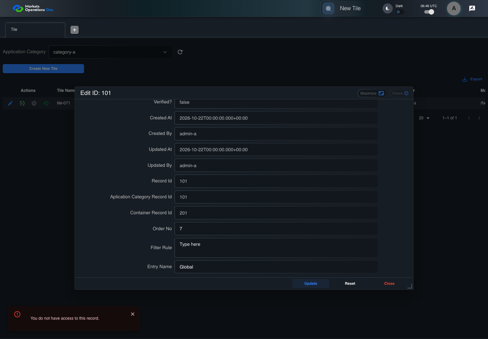

BFF-ADM-071 current BFF administration through actual UI
PASS · application/run-072/bff-adm-071-current-bff-administration-through-actual-ui-e45d52ce4289-attempt-1 · ACTUAL_APPLICATION_LOCAL_SERVICES
Actual current React and exact-current BFF admin controllers/services/JPA with actual migration DDL in disposable PostgreSQL. Controlled OUD/EMS2 identities and local Spring bootstrap. Fixture SQL seeds/mutates isolated records; service errors are actual database errors. Undefined agreed messages remain unresolved acceptance.
2026-10-22T06:46:26.593Z to 2026-10-22T06:46:33.702Z
Assertions and result · Artifact manifest · Exact run inputs and source hashes
Result SHA-256:81bd39f722c61ba4397031316f0383982a21a6aecf9196c0eef68096b5019876Machine observations
- actual-identity-projection.json
43e95e21d5880c83c7bf839dc21167c0cdf50035c7f2faaf0046693e604335fe - baseline-inputs.json
d7d51c6ad631ebe0e8e8c7f0bab368c3508aa7da824a93b18614087985f38e7d - bff-boundary.json
5189218765c528ac97aecb17dccf42e357016a6e080e0e7a235413834dc3e876 - committed-ui-submission-comparisons.json
3bae6058f00f2eae89d3c02e7ee52e90974f53f598b99f27eacf93057535b007 - empty-filter-rule-representation.json
5c221ee0ad07078a07a1b8c90716e136c20951a544f3530ea5fcd32342aaebac - fixture-step-10.json
6bc9edbcf39112402ac5e02ebd2da7472caebe5466deb8b71dec951a0f7b2392 - fixture-step-11.json
97725101cb97bbd9d39636842b92919ab580eda97fdccc33e9c9ac31e4102f48 - fixture-step-6.json
72a0571ff5c50413499064e4232868ef58b233055dc4b36ba814575fd51099f0 - fixture-step-7.json
ea15dd3456d700d6d22325676d60133a233818b500e29ea2345351537966e727 - fixture-step-8.json
b79b6cf11f54879e1a9c23367acd3f011f49681a70e74a26babf80b17bcb107f - fixture-step-9.json
03c32c751c5e6b1a736ea0d7b51c9272c3064a358eee8fd08b9c60a98d406eda - initial-persisted-records.json
e2ce6883c4bf2796fc1f9161e47ba36cdb41a5841d401664abb3b102bc77558c - persisted-after-submit.json
d29e1304392014c655b424fb5f1ce1b9919ca747554faee3e886bf7d0b24091c - reference-snapshot-3.json
f1322f2d644a2edd6cf21f58f5dc481b7d36d02c8241c6884016fe7389beb015 - reference-snapshot-4.json
f330619e8dc2e9f3f27a3ee5e5ac104286ad4ae568f642917448a6f0229cf98a - ui-origin-bff-requests.json
7a5b006acf1daa66a7d01e8670cfe7b325681f576084ce23dd864f5b0495d35f
Screenshot capture: CAPTURED. Named frames: 23.
Step screenshot evidence: COMPLETE. 22/22 canonical steps have execution screenshots.
Canonical step timeline
Given Admin A uses subject "admin-a" with role "FMO_ADMIN" in an isolated authenticated browser
Execution: PASSED.1. step-01 Visible state after step 1: Given Admin A uses subject "admin-a" with role "FMO_ADMIN" in an isolated authenticated browser
2026-10-22T06:46:28.959Z · 1440×1000
Step: /Users/lushevol/code/github/ratan-release-impact/workbench/tasks/ui-test-coverage-20261022/test-cases.md:17682
SHA-256:ee31b00f7f299df41bedb5986ac3a47908d6074ef999be2ca6abcc47a73ac921And the controlled Tile fixture records the initial grid rows and persisted values
Execution: PASSED.2. step-02 Visible state after step 2: And the controlled Tile fixture records the initial grid rows and persisted values
2026-10-22T06:46:29.107Z · 1440×1000
Step: /Users/lushevol/code/github/ratan-release-impact/workbench/tasks/ui-test-coverage-20261022/test-cases.md:17683
SHA-256:a2a5d901d838f6a7105c07c882858414cbb0764bcbfdc596bc2b1953e67eb467And Category 101 has label "category-a" and Import Map 201 has Module Name "container-a"
Execution: PASSED.3. step-03 Visible state after step 3: And Category 101 has label "category-a" and Import Map 201 has Module Name "container-a"
2026-10-22T06:46:29.160Z · 1440×1000
Step: /Users/lushevol/code/github/ratan-release-impact/workbench/tasks/ui-test-coverage-20261022/test-cases.md:17684
SHA-256:a31938d925c1ebd67dc210c2eafbe610a9b7670723aaa47d9bd9a806e983fc96And both references belong to "FMO_ADMIN" and the Tile page category filter value is Category 101
Execution: PASSED.4. step-04 Visible state after step 4: And both references belong to "FMO_ADMIN" and the Tile page category filter value is Category 101
2026-10-22T06:46:29.222Z · 1440×1000
Step: /Users/lushevol/code/github/ratan-release-impact/workbench/tasks/ui-test-coverage-20261022/test-cases.md:17685
SHA-256:531a628a3ad6fe5da9f3d71bf680c9dc1478b1492c226cc6fd2771e55b89dd34And the Tile grid has record "101" owned by "FMO_ADMIN"
Execution: PASSED.5. step-05 Visible state after step 5: And the Tile grid has record "101" owned by "FMO_ADMIN"
2026-10-22T06:46:29.271Z · 1440×1000
Step: /Users/lushevol/code/github/ratan-release-impact/workbench/tasks/ui-test-coverage-20261022/test-cases.md:17686
SHA-256:2d13fa96dee8cf5c435bc9e55561083bb06897b43b126930eb34c2bc47182f34And the baseline fixture data defines "Tile Name" as "tile-071"
Execution: PASSED.6. step-06 Visible state after step 6: And the baseline fixture data defines "Tile Name" as "tile-071"
2026-10-22T06:46:29.322Z · 1440×1000
Step: /Users/lushevol/code/github/ratan-release-impact/workbench/tasks/ui-test-coverage-20261022/test-cases.md:17687
SHA-256:a87cf550b1a447539a3929ed3eecd4ecf3ef020e8f2de7158e5b59d41b3a56dbAnd the baseline fixture data defines "Module Path" as "/fixture"
Execution: PASSED.7. step-07 Visible state after step 7: And the baseline fixture data defines "Module Path" as "/fixture"
2026-10-22T06:46:29.372Z · 1440×1000
Step: /Users/lushevol/code/github/ratan-release-impact/workbench/tasks/ui-test-coverage-20261022/test-cases.md:17688
SHA-256:47a63fd36631f68422497b533f9083d74527d8719ef82b33cfbe31c03c388787And the baseline fixture data defines "Tile Path" as "/case-071"
Execution: PASSED.8. step-08 Visible state after step 8: And the baseline fixture data defines "Tile Path" as "/case-071"
2026-10-22T06:46:29.422Z · 1440×1000
Step: /Users/lushevol/code/github/ratan-release-impact/workbench/tasks/ui-test-coverage-20261022/test-cases.md:17689
SHA-256:b46699c6adcd63590a13e6dd45d15710dab047ddaf3b69a36836599fdc76f9f2And the baseline fixture data defines "Role Entities" as "E-TRADE"
Execution: PASSED.9. step-09 Visible state after step 9: And the baseline fixture data defines "Role Entities" as "E-TRADE"
2026-10-22T06:46:29.474Z · 1440×1000
Step: /Users/lushevol/code/github/ratan-release-impact/workbench/tasks/ui-test-coverage-20261022/test-cases.md:17690
SHA-256:cf0fdd29db2de9581291a3901aa9a162c6f6bdbf2876320f0ee07fd1e8df9355And the baseline fixture data defines "Filter Rule" as ""
Execution: PASSED.10. step-10 Visible state after step 10: And the baseline fixture data defines "Filter Rule" as ""
2026-10-22T06:46:29.524Z · 1440×1000
Step: /Users/lushevol/code/github/ratan-release-impact/workbench/tasks/ui-test-coverage-20261022/test-cases.md:17691
SHA-256:14072ec8b1379713a89b4c18d3623dfc79e8d182c6a7cfabfb222d832e4b3484And the baseline Tile references use "Aplication Category" "category-a" and "Container" "container-a"
Execution: PASSED.11. step-11 Visible state after step 11: And the baseline Tile references use "Aplication Category" "category-a" and "Container" "container-a"
2026-10-22T06:46:29.570Z · 1440×1000
Step: /Users/lushevol/code/github/ratan-release-impact/workbench/tasks/ui-test-coverage-20261022/test-cases.md:17692
SHA-256:c376fed54cf56bee9aedb13454891c0d363eb653a8779b8d429bcef46e78cbd9When Admin A clicks the button labeled "Edit" in the Tile grid row with "Record Id" "101"
Execution: PASSED.12. step-12 Visible state after step 12: When Admin A clicks the button labeled "Edit" in the Tile grid row with "Record Id" "101"
2026-10-22T06:46:29.878Z · 1440×1000
Step: /Users/lushevol/code/github/ratan-release-impact/workbench/tasks/ui-test-coverage-20261022/test-cases.md:17693
SHA-256:1fd41a622c0fdc18a67f3edaae837be634e9dd839548af499021e70eecc9c616Then the dialog titled "edit ID: 101" is visible on the Tile administration page
Execution: PASSED.13. step-13 Visible state after step 13: Then the dialog titled "edit ID: 101" is visible on the Tile administration page
2026-10-22T06:46:29.925Z · 1440×1000
Step: /Users/lushevol/code/github/ratan-release-impact/workbench/tasks/ui-test-coverage-20261022/test-cases.md:17694
SHA-256:9c1115187cc7511a62deafc8e796f624ba6a669b5c6a554ceaa3adc4f07faac6When the controlled database event changes record "101" owner to "OTHER_ADMIN" before submission
Execution: PASSED.14. step-14 Visible state after step 14: When the controlled database event changes record "101" owner to "OTHER_ADMIN" before submission
2026-10-22T06:46:29.977Z · 1440×1000
Step: /Users/lushevol/code/github/ratan-release-impact/workbench/tasks/ui-test-coverage-20261022/test-cases.md:17695
SHA-256:6e8f10ee1208642f4ef05e794bada8336c3de584a2adef8684c9aba1ce693893And Admin A fills the textbox labeled "Tile Name" with "rejected-change" in dialog "edit ID: 101"
Execution: PASSED.15. step-15 Visible state after step 15: And Admin A fills the textbox labeled "Tile Name" with "rejected-change" in dialog "edit ID: 101"
2026-10-22T06:46:30.416Z · 1440×1000
Step: /Users/lushevol/code/github/ratan-release-impact/workbench/tasks/ui-test-coverage-20261022/test-cases.md:17696
SHA-256:5c89ad0a811531695ed3bccd2e5a6812bf8b39c55ee971e313713f171d36dafeAnd Admin A fills the textbox labeled "Module Path" with "/fixture" in dialog "edit ID: 101"
Execution: PASSED.16. step-16 Visible state after step 16: And Admin A fills the textbox labeled "Module Path" with "/fixture" in dialog "edit ID: 101"
2026-10-22T06:46:30.865Z · 1440×1000
Step: /Users/lushevol/code/github/ratan-release-impact/workbench/tasks/ui-test-coverage-20261022/test-cases.md:17697
SHA-256:5ab7ee4e43412d4dd4a61a9da44f52c08ccd2cc0780a8acb025abf1678619865And Admin A fills the textbox labeled "Tile Path" with "/case-071" in dialog "edit ID: 101"
Execution: PASSED.17. step-17 Visible state after step 17: And Admin A fills the textbox labeled "Tile Path" with "/case-071" in dialog "edit ID: 101"
2026-10-22T06:46:31.276Z · 1440×1000
Step: /Users/lushevol/code/github/ratan-release-impact/workbench/tasks/ui-test-coverage-20261022/test-cases.md:17698
SHA-256:751b0fb3c8a98397385b15df937e07f10643d2a6237862392fa2ef6fe99ba06dAnd Admin A fills the textarea labeled "Role Entities" with "E-TRADE" in dialog "edit ID: 101"
Execution: PASSED.18. step-18 Visible state after step 18: And Admin A fills the textarea labeled "Role Entities" with "E-TRADE" in dialog "edit ID: 101"
2026-10-22T06:46:31.719Z · 1440×1000
Step: /Users/lushevol/code/github/ratan-release-impact/workbench/tasks/ui-test-coverage-20261022/test-cases.md:17699
SHA-256:e391a9bfae8329d9a5770a60e87e0149d8fb46adea542e91ddb79aeac11821bfAnd Admin A fills the textarea labeled "Filter Rule" with "" in dialog "edit ID: 101"
Execution: PASSED.19. step-19 Visible state after step 19: And Admin A fills the textarea labeled "Filter Rule" with "" in dialog "edit ID: 101"
2026-10-22T06:46:32.165Z · 1440×1000
Step: /Users/lushevol/code/github/ratan-release-impact/workbench/tasks/ui-test-coverage-20261022/test-cases.md:17700
SHA-256:5fe8ae971f40944886faacc60ac161f4d20202ab98f485a713ca86a540c3e77dAnd Admin A clicks the button labeled "Update" in dialog "edit ID: 101"
Execution: PASSED.20. step-20 Visible state after step 20: And Admin A clicks the button labeled "Update" in dialog "edit ID: 101"
2026-10-22T06:46:32.442Z · 1440×1000
Step: /Users/lushevol/code/github/ratan-release-impact/workbench/tasks/ui-test-coverage-20261022/test-cases.md:17701
SHA-256:380b179ff238e6ef7a64069a2483cc8cb29de1ca32c0fade4e4770fc4b6f5d03Then the alert with severity "error" in the portal snackbar contains the exact text "You do not have access to this record."
Execution: PASSED.21. step-21 Visible state after step 21: Then the alert with severity "error" in the portal snackbar contains the exact text "You do not have access to this record."
2026-10-22T06:46:32.506Z · 1440×1000
Step: /Users/lushevol/code/github/ratan-release-impact/workbench/tasks/ui-test-coverage-20261022/test-cases.md:17702
SHA-256:503d26cb7fe5e9fc0c4b1bd86c105eb9afbffb1a5470d634d736994931b20434And the Tile data grid with column "Record Id" row identifiers and loaded field values equal the initial grid snapshot on the Tile administration page
Execution: PASSED.
22. step-22 Visible state after step 22: And the Tile data grid with column "Record Id" row identifiers and loaded field values equal the initial grid snapshot on the Tile administration page
2026-10-22T06:46:32.623Z · 1440×1000
Step: /Users/lushevol/code/github/ratan-release-impact/workbench/tasks/ui-test-coverage-20261022/test-cases.md:17703
SHA-256:022c5abc5ff52dd58c22605cb51adc2f5a11e421cb77df9b69210f747b7233b6
Additional named frames
Screenshots establish visible state only. Assertions and traces support functional claims.